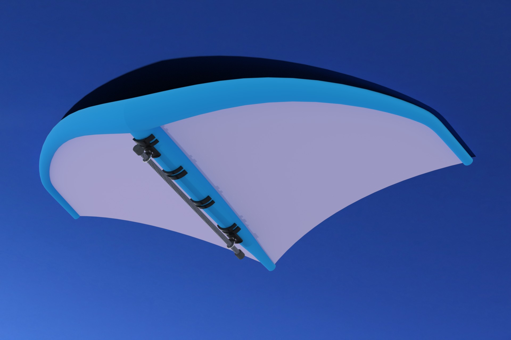
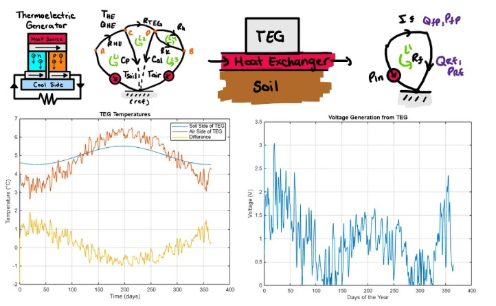

Applied Work
Projects
Two placeholder cards below are ready for you to swap in more of your own work.

Wing Foil Force Measurement System
- Modeled the internal electronics housing in SolidWorks, packaging all components within a 29 mm internal-diameter carbon-fiber tube.
- Served as project manager, tracking progress across mechanical, electrical, and software subsystems and coordinating the team to meet milestones.
- Reviewed wiring diagrams and engineering drawings before fabrication.
- Managed procurement across a $1,500 CAD budget, balancing cost and lead time.
- Contributed to the project risk register and reliability estimates.

Modelling & Simulation of Dynamic Systems
- Built a 12+ state dynamic model in MATLAB for a renewable energy system integrating thermoelectric generation, flywheel energy storage, and reverse osmosis.
- Simulated seasonal temperature variation to evaluate energy generation, storage, and consumption over time.
- Modeled thermal, electrical, mechanical, and fluid subsystems, including a nonlinear valve.
Placeholder — edit me
Project title
One or two sentences on what the project was and why it mattered.
- What you built or designed
- Tools, methods, or standards used
- The outcome or result
Placeholder — edit me
Project title
One or two sentences on what the project was and why it mattered.
- What you built or designed
- Tools, methods, or standards used
- The outcome or result